1. [Bab 1: Pengenalan & Dashboard Utama](01-dashboard.md)
Sistem WMS LAF Project menerapkan kontrol akses berbasis peran (Role-Based Access Control / RBAC). Berikut adalah pemetaan hak akses untuk setiap peran pengguna di dalam sistem:
| Fitur / Modul Menu | Super Admin | Admin Manajer | Operator Gudang | Tim Sales | Tim Finance |
| --- | :---: | :---: | :---: | :---: | :---: |
| Dashboard Utama | |||||
| Master Stok (Lihat) | |||||
| Master Stok (Tambah/Edit/Hapus/Import) | ❌ | ❌ | ❌ | ||
| Manajemen Lokasi (Lihat) | |||||
| Manajemen Lokasi (Tambah/Edit/Hapus) | ❌ | ❌ | ❌ | ||
| Aturan Pengkodean | ❌ | ❌ | ❌ | ||
| Supplier & Pelanggan (Lihat & Riwayat) | |||||
| Supplier & Pelanggan (Kelola Data) | ❌ | ❌ | ❌ | ||
| Audit Stok (Opname) | ❌ | ❌ | |||
| Barang Masuk (Inbound) | ❌ | ❌ | |||
| Barang Keluar (Outbound) | ❌ | ||||
| Purchase Order (Lihat) | |||||
| Purchase Order (Buat/Edit) | ❌ | ❌ | |||
| Forecast & Analisis | ❌ | ❌ | |||
| Transfer Gudang & Replenishment | ❌ | ❌ | |||
| Picking & Packing/QC | ❌ | ||||
| Laporan & Analitik (Keuangan) | ❌ | ❌ | |||
| Log Perubahan (Audit Log) | ❌ | ❌ | ❌ | ||
| Manajemen Akses User | ❌ | ❌ | ❌ | ❌ |
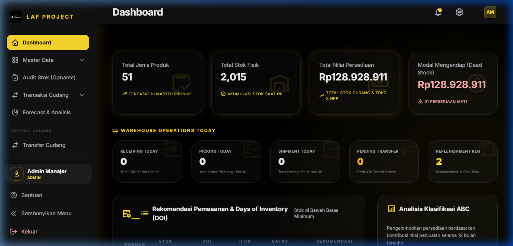
Tampilan keseluruhan halaman Dashboard Utama WMS LAF Project
/dashboard (atau halaman utama /)/dashboard).
2. Pemantauan Kartu KPI Utama: Periksa 4 Kartu KPI di bagian atas:
| Nama Indikator / Widget | Tipe / Format | Keterangan & Rumus Kalkulasi | Sumber Data (Model / Tabel) |
| Total Produk | Angka Bulat | Jumlah total varian produk/SKU aktif di sistem | mst_produk.id (Count) |
| Total Unit Stok | Angka Bulat | Akumulasi kuantitas fisik stok seluruh produk | mst_produk.total_stok (Sum) |
| Nilai Inventori | Currency (Rp) | Total nilai aset persediaan = $\sum (\text{total\_stok} \times \text{hpp})$ | mst_produk (Sum HPP * Stok) |
| Low Stock Count | Angka Bulat | Jumlah SKU dengan total_stok < minimal_stock | mst_produk join analytics_produk |
| Dead Stock Count & Value | Angka & Currency (Rp) | SKU dengan total_stok > 0 dan penjualan harian $= 0$. Nilai dead stock = $\sum (\text{total\_stok} \times \text{hpp})$ | mst_produk join analytics_produk |
| Days of Inventory (DOI) | Angka (Hari) | Ketahanan stok fisik dalam hari = $\lfloor \frac{\text{total\_stok}}{\text{rata\_rata\_harian}} \rfloor$ | Kalkulasi dinamis Dashboard.php |
| Reorder Point (ROP) | Angka (Unit) | Titik pemesanan ulang = $(\text{rata\_rata\_harian} \times \text{leadtime}) + \text{safety\_stock}$ | Kalkulasi dinamis Dashboard.php |
| Reorder Qty Recommendation | Angka (Unit) | Jumlah rekomendasi beli = $\max(0, \text{maximum\_stock} - \text{total\_stok})$ | Kalkulasi dinamis Dashboard.php |
| Pending PO (Sisa PO) | Angka (Unit) | Sisa unit barang yang belum diterima dari supplier | po_detail.sisa (Sum) |
| Nama Tombol / Link | Lokasi / Widget | Aksi & Efek ke Sistem |
| Buat PO Baru | Card Reorder Alert | Mengarahkan pengguna ke halaman pembuatan Purchase Order (/purchase-order) dengan menyertakan rekomendasi SKU. |
| Lihat Semua Barang Masuk | Panel Transaksi Terakhir | Mengarahkan pengguna ke halaman Transaksi Barang Masuk (/barang-masuk). |
| Lihat Semua Barang Keluar | Panel Transaksi Terakhir | Mengarahkan pengguna ke halaman Transaksi Barang Keluar (/barang-keluar). |
Dashboard.php)cache()->remember('dashboard_kpi_stats', 300, ...) untuk menjamin performa dashboard tetap di bawah 100ms.0, DOI diberi nilai default 999 hari untuk mencegah pembagian dengan nol (division by zero).mst_produk.minimal_stock, safety_stock, maximum_stock, leadtime_produksi, dan rata_rata_harian dari analytics_produk.po_detail).LAF-SHOE-BLK-42 memiliki sisa stok 5 pasang, sedangkan minimal_stock adalah 20 pasang.
3. Sistem menghitung DOI = 2 hari (karena rata-rata penjualan 2.5 pasang/hari).
4. Manajer mengklik tombol Buat PO Baru pada rekomendasi tersebut untuk memesan 50 pasang (sesuai rekomendasi maximum_stock).
| Gejala / Pesan Error | Penyebab | Solusi Pengguna / Admin |
| Angka KPI Stok pada Dashboard tidak berubah setelah transaksi barang masuk baru. | Data KPI KPI di-cache selama 5 menit oleh sistem untuk efisiensi server. | Tunggu hingga 5 menit atau lakukan reload halaman setelah cache terkelola otomatis. |
| Nilai Reorder Point / DOI bernilai 0 atau 999. | Data analitik produk (analytics_produk) belum pernah dihitung atau di-generate. | Buka menu Forecast & Analisis (/analytics) lalu jalankan regenerasi data analitik. |
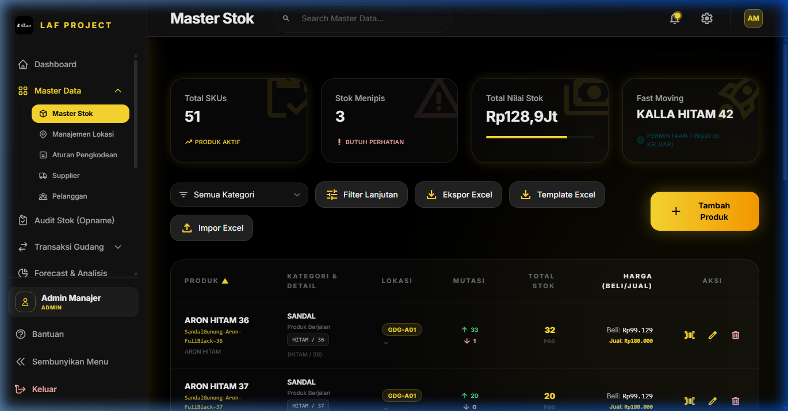
Halaman Master Stok tempat mengelola katalog produk, pencarian variasi, import excel, dan cetak barcode
view master): Super Admin, Admin Manajer, Operator Gudang, Tim Sales, Tim Finance.manage master): Super Admin, Admin Manajer./stock-mastersearch untuk mencari berdasarkan nama barang, kode SKU, kategori, warna, atau ukuran.| Nama Field | Tipe Input | Wajib / Opsional | Keterangan & Batasan Validasi | Sumber Data / Tabel |
nama_produk | Text | Wajib | Nama induk kelompok produk (maks 200 karakter) | mst_produk.nama_produk |
kategori | Select / Text | Wajib | Kategori utama produk (misal: Sepatu, Sandal) | mst_produk.kategori |
kategori_2 | Text | Opsional | Sub-kategori atau tag sekunder | mst_produk.kategori_2 |
kode_barang | Text | Wajib (Auto) | Kode SKU unik (maks 100 karakter, Unique) | mst_produk.kode_barang |
nama_barang | Text | Wajib | Nama spesifik barang lengkap dengan variasi | mst_produk.nama_barang |
variasi_barang | Text | Wajib | Keterangan variasi (misal: Hitam Size 42) | mst_produk.variasi_barang |
warna | Text | Opsional | Warna spesifik barang | mst_produk.warna |
size | Text | Opsional | Ukuran/size barang (misal: 42, XL) | mst_produk.size |
satuan | Select | Wajib | Satuan kuantitas (Default: pasang, pcs, box) | mst_produk.satuan |
lokasi | Select | Wajib | Kode lokasi gudang default (FK to mst_lokasi) | mst_lokasi.kode_lokasi |
hpp | Number | Wajib | Harga Pokok Pembelian per unit (min: 0) | mst_produk.hpp |
harga_jual | Number | Wajib | Harga Jual standar ke pelanggan (min: 0) | mst_produk.harga_jual |
total_stok | System Auto | Auto | Akumulasi kuantitas stok aktual di gudang | mst_produk.total_stok |
is_active | Toggle / Checkbox | Wajib | Status keaktifan produk dalam transaksi | mst_produk.is_active |
| Nama Tombol | Aksi & Efek ke Sistem |
| + Tambah Barang Baru | Membuka modal form pembuatan produk baru. |
| Import Excel | Membuka modal upload file spreadsheet .xlsx / .xls untuk membuat SKU masal. |
| Export Excel | Mengunduh file Excel products_export.xlsx berisikan seluruh daftar stok. |
| Download Template Import | Mengunduh format file Excel standar untuk pengisian data import. |
| Barcode Icon | Membuka modal pratinjau Barcode SVG/PNG yang siap dicetak ke label printer. |
| Simpan Data | Memvalidasi input dan menyimpan/memperbarui data di database mst_produk. |
StockMaster\Index.php)autoGenerateSku = true, sistem akan merangkai Kode Barang secara otomatis berdasarkan formula di AturanKode (contoh: SEPATU-LAF-BLK-42-001).kode_barang harus unik di dalam tabel mst_produk.mst_lokasi) untuk lokasi penyimpanan default.mst_aturan_kode) untuk format otomatis SKU.SPT-SNK-HTM-41-001.
4. Klik Simpan Data. Produk kini terdaftar di sistem.
| Pesan Error / Masalah | Penyebab | Solusi |
The kode barang has already been taken. | Kode SKU yang dimasukkan manual sudah terdaftar di sistem. | Gunakan fitur Auto-Generate SKU atau masukkan Kode SKU lain yang unik. |
| Data pada File Import Excel gagal diproses. | Format kolom tidak sesuai dengan template atau kode lokasi tidak terdaftar di mst_lokasi. | Unduh ulang Template Import, pastikan Kode Lokasi persis sama dengan yang ada di menu Manajemen Lokasi. |
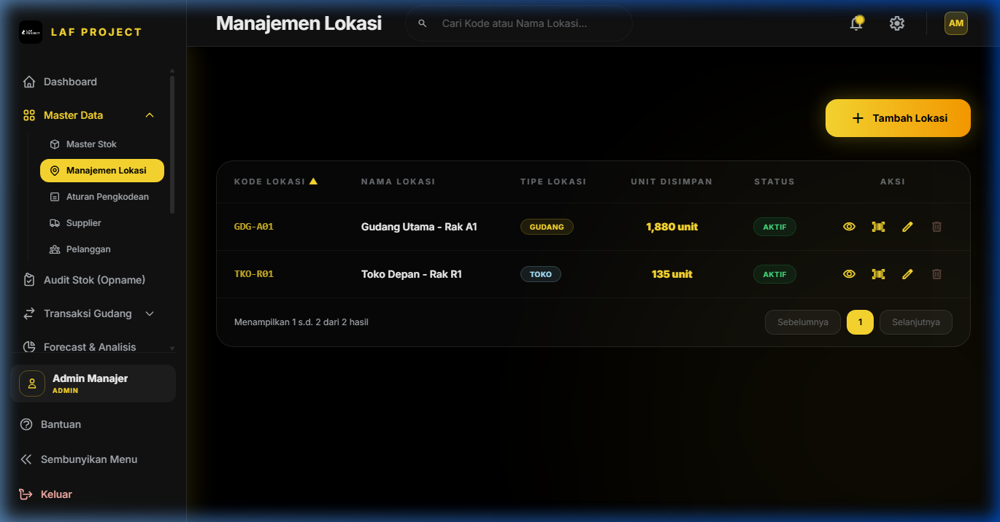
Halaman Manajemen Lokasi Gudang dan Toko
view master): Semua User terautentikasi.manage master): Super Admin, Admin Manajer./lokasi (Detail: /lokasi/{lokasi}/detail)kode_lokasi (misal: GDG-A02), nama_lokasi (misal: Gudang Utama Rak A02), dan pilih tipe_lokasi (GUDANG atau TOKO).
4. Klik Simpan.
5. Untuk melihat daftar stok spesifik pada lokasi tersebut, klik tombol Detail Lokasi.
| Nama Field | Tipe Input | Wajib / Opsional | Keterangan & Validasi |
kode_lokasi | Text | Wajib | Kode unik lokasi (Upper Case, Unique, misal: GDG-A01, TKO-R01) |
nama_lokasi | Text | Wajib | Nama deskriptif area penyimpanan (maks 200 karakter) |
tipe_lokasi | Select | Wajib | Kategori tipe lokasi: GUDANG (Internal Warehouse) atau TOKO (Retail Shop) |
is_active | Toggle | Wajib | Status aktif lokasi |
Lokasi\Index.php)GDG-A01 dan TKO-R01 TIDAK BOLEH DIDELETE atau DIUBAH KODENYA karena digunakan sebagai fallback sistem untuk transaksi dasar dan pengisian stok otomatis.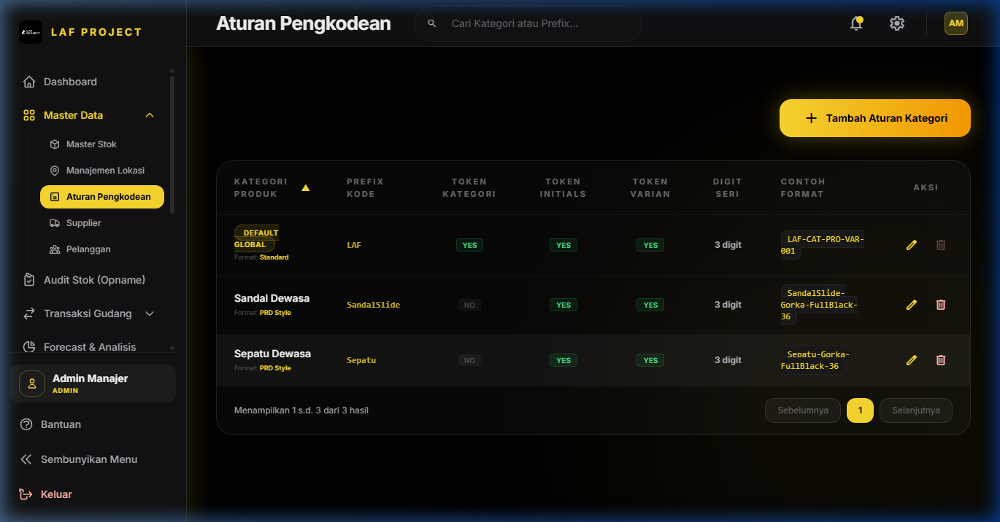
Halaman Aturan Pengkodean SKU Otomatis
manage master): Super Admin, Admin Manajer./pengkodean| Nama Field | Tipe Input | Keterangan & Contoh Efek |
kategori | Select / Text | Kategori spesifik aturan (kosongkan untuk aturan Default Global) |
prefix | Text | Prefix kustom depan SKU (misal: LAF, PRD) |
include_category_prefix | Toggle | Memasukkan 3 huruf depan kategori (contoh: SEPATU -> SPT) |
include_product_initials | Toggle | Memasukkan inisial dari nama produk (contoh: Running Shoes -> RS) |
include_variant_code | Toggle | Memasukkan kode warna/size di SKU |
increment_digits | Number | Jumlah digit nomor urut belakang (contoh: 3 -> 001, 4 -> 0001) |
format_tipe | Select | Pola penomoran: INCREMENT (Numerik Urut) atau PRD_STYLE (Format Gaya Produk LAF) |
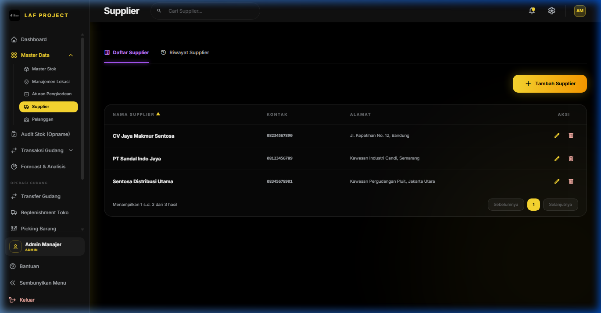
Halaman Pengelolaan Supplier dan Pelanggan
view master): Semua User terautentikasi.manage master): Super Admin, Admin Manajer./supplier (Riwayat Transaksi: /supplier/riwayat)/pelanggan (Riwayat Transaksi: /pelanggan/riwayat)| Nama Field | Tipe Input | Wajib / Opsional | Keterangan |
kode_supplier / kode_pelanggan | Text | Wajib | Kode Unik identitas mitra (misal: SUP-001, CUST-001) |
nama_supplier / nama_pelanggan | Text | Wajib | Nama resmi perusahaan atau perorangan |
kontak / telepon | Text | Opsional | Nomor HP / WhatsApp aktif |
email | Opsional | Alamat email korespondensi | |
alamat | Textarea | Opsional | Alamat lengkap domisili / pengiriman |
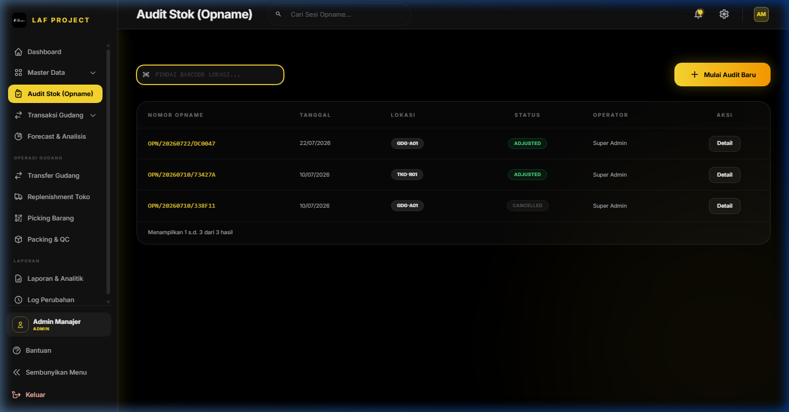
Halaman Lembar Kerja Audit Stok Opname dan Input Hasil Fisik
input masuk): Super Admin, Admin Manajer, Operator Gudang./audit#### A. Membuka Sesi Audit Baru (DRAFT)
1. Masuk ke menu Audit Stok (Opname). 2. Klik tombol + Sesi Audit Baru (atau gunakan Barcode Scanner untuk memindai Barcode Lokasi gudang sepertiGDG-A01).
3. Pilih Tanggal Audit, pilih Lokasi Gudang / Toko yang akan diaudit, dan beri catatan pada kolom Keterangan.
4. Klik Mulai Audit. Sistem secara otomatis merilis Nomor Opname unik (misal: OPN/20260818/A1F9) dan memuat seluruh produk yang terdaftar di lokasi tersebut dengan qty_sistem awal.
#### B. Penginputan Hasil Hitung Fisik (Physical Count)
Ada 2 cara penginputan fisik:qty_fisik produk tersebut bertambah +1 secara otomatis dan suara beep berbunyi.
Selisih = Stok Fisik - Stok Sistem.
#### C. Pengesahan Audit & Penyesuaian Stok (POSTED)
1. Setelah seluruh barang dihitung, periksa ringkasan varian (Selisih Positif / Selisih Negatif). 2. Klik tombol Sahkan & Post Opname (Sesuaikan Stok). 3. Konfirmasikan dialog persetujuan. 4. Efek Sistem:POSTED.trx_stok_lokasi dan mst_produk.total_stok langsung disesuaikan secara otomatis.trx_mutasi_lokasi) dengan tipe ADJUSTMENT untuk kebutuhan audit trail.| Nama Field | Tipe Input | Wajib / Opsional | Keterangan & Batasan | Tabel Database |
nomor_opname | System Auto | Auto | Nomor referensi unik sesi audit (contoh: OPN/20260818/B3C2) | trx_opname_header.nomor_opname |
tanggal | Date | Wajib | Tanggal pelaksanaan opname fisik | trx_opname_header.tanggal |
lokasi_id | Select | Wajib | Lokasi spesifik yang diaudit (FK to mst_lokasi) | trx_opname_header.lokasi_id |
status | System | Auto | Status Sesi: DRAFT (Sedang berjalan) atau POSTED (Disahkan) | trx_opname_header.status |
barcodeScan | Text / Scan | Opsional | Input cepat pemindaian barcode lokasi atau barcode SKU | Temporary State |
qty_sistem | Read-only | Auto | Kuantitas stok di sistem saat sesi audit dibuka | trx_opname_detail.qty_sistem |
qty_fisik | Number | Wajib | Kuantitas aktual hasil perhitungan fisik petugas | trx_opname_detail.qty_fisik |
selisih | Read-only | Auto | Selisih varian = qty_fisik - qty_sistem | trx_opname_detail.selisih |
| Nama Tombol | Aksi & Efek ke Sistem |
| + Sesi Audit Baru | Membuka form modal inisiasi sesi opname lokasi baru. |
| Sahkan & Post Opname | Mengunci sesi opname (status POSTED) dan memperbarui stok aktual di database. |
| Batal / Hapus Sesi DRAFT | Membatalkan sesi DRAFT tanpa mengubah stok di database. |
| Reset ke Stok Sistem | Mengembalikan seluruh qty_fisik sama dengan qty_sistem pada lembar kerja. |
Audit\Index.php)DRAFT baru pada lokasi yang sama jika lokasi tersebut masih memiliki sesi audit DRAFT yang belum disahkan. Sistem akan secara otomatis mengarahkan ke sesi DRAFT yang ada.POSTED terkunci secara permanen dan tidak dapat diubah atau dihapus.MutasiLokasi dengan reference ID opname untuk transparansi pemeriksaan akuntan/auditor.total_stok pada mst_produk.GDG-A01.
1. Petugas memilih lokasi GDG-A01 -> Klik Mulai Audit.
2. Pada barang LAF-SHOE-BLK-40, stok sistem mencatat 10 pasang.
3. Setelah dihitung fisik, ternyata hanya ada 8 pasang (hilang 2 pasang). Petugas mengisi Stok Fisik = 8.
4. Kolom selisih menampilkan -2 (berwarna merah).
5. Petugas mengklik Sahkan & Post Opname. Stok di gudang GDG-A01 langsung berkurang dari 10 menjadi 8 pasang, dan jurnal penyesuaian -2 pasang tercatat di log audit.
| Pesan Error / Masalah | Penyebab | Solusi |
Barcode lokasi tidak cocok dengan lokasi sesi audit saat ini. | Petugas memindai kode lokasi lain di tengah-tengah sesi audit aktif. | Pastikan memindai produk yang ada pada lokasi yang sedang dibuka, atau kembali ke menu utama untuk membuka sesi lokasi lain. |
| Tombol Sahkan & Post Opname tidak dapat diklik / diabaikan. | Terdapat nilai stok fisik negatif atau format input bukan angka. | Periksa lembar kerja, pastikan semua kolom stok fisik terisi dengan angka desimal/bulat non-negatif ($\ge 0$). |
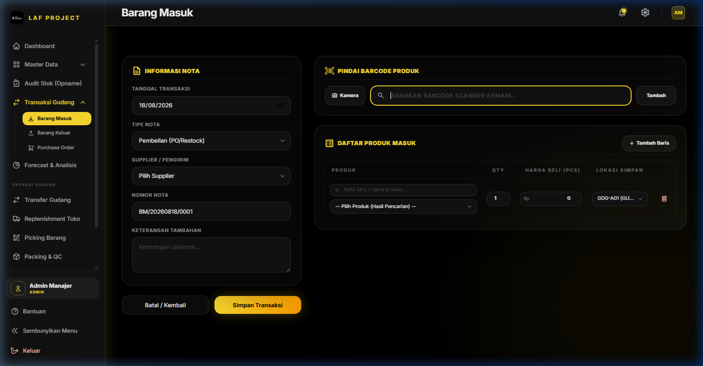
Form Input Penerimaan Barang Masuk (Inbound Transaction)
input masuk): Super Admin, Admin Manajer, Operator Gudang./barang-masuk (Buat Baru: /barang-masuk/create, Edit: /barang-masuk/{id}/edit, Riwayat: /barang-masuk/riwayat)BM/20260818/001).
3. Pilih Tipe Nota: Pembelian, Stock Awal, Retur Masuk, atau Penyesuaian.
4. Pilih Supplier pengirim barang (Wajib untuk Pembelian/Retur).
5. Tambahkan Item Barang:
Kuantitas Masuk, Lokasi Simpan, dan HPP / Harga Beli.po_detail_id).mst_produk.total_stok bertambah.trx_stok_lokasi bertambah.po_detail.sisa dan po_detail.diterima diperbarui (sisa PO berkurang).| Nama Field | Tipe Input | Wajib / Opsional | Keterangan & Validasi |
tanggal | Date | Wajib | Tanggal penerimaan barang |
tipe_nota | Select | Wajib | Pilihan: Stock Awal, Pembelian, Retur Masuk, Penyesuaian |
supplier_id | Select | Wajib | Supplier pengirim (Opsional hanya jika Tipe Nota = Stock Awal) |
nomor_nota | Text | Wajib | Kode Nota unik (Auto-generated: BM/YYYYMMDD/XXX) |
keterangan_tambahan | Textarea | Opsional | Catatan tambahan seperti nomor surat jalan supplier |
items.*.produk_id | Select / Scan | Wajib | SKU/Produk yang diterima |
items.*.qty_masuk | Number | Wajib | Jumlah unit masuk (Integer $\ge 1$) |
items.*.lokasi_simpan | Select | Wajib | Kode lokasi rak tujuan barang disimpan (misal: GDG-A01) |
items.*.hpp | Number | Wajib | Harga beli / modal per unit ($\ge 0$) |
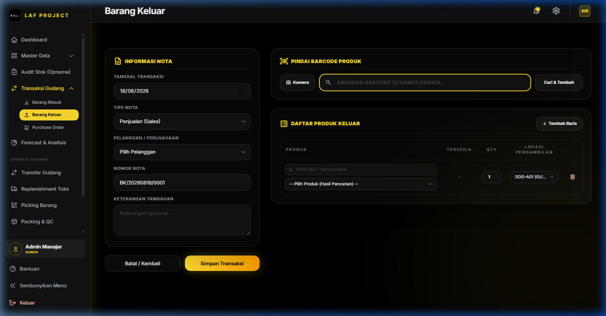
Form Input Pengeluaran Barang Keluar (Outbound Transaction)
input keluar): Super Admin, Admin Manajer, Operator Gudang, Tim Sales./barang-keluar (Buat Baru: /barang-keluar/create, Riwayat: /barang-keluar/riwayat)BK/20260818/001).
3. Pilih Pelanggan (Customer/Mitra).
4. Tambahkan item barang yang dikeluarkan, tentukan Lokasi Asal Ambil dan Kuantitas Keluar.
5. Validasi Stok: Sistem secara otomatis mengecek ketersediaan stok aktual di lokasi tersebut. Jika qty_keluar > stok_tersedia, transaksi ditolak dengan pesan peringatan.
6. Klik Simpan Transaksi.
7. Efek Sistem:
mst_produk.total_stok dan trx_stok_lokasi berkurang.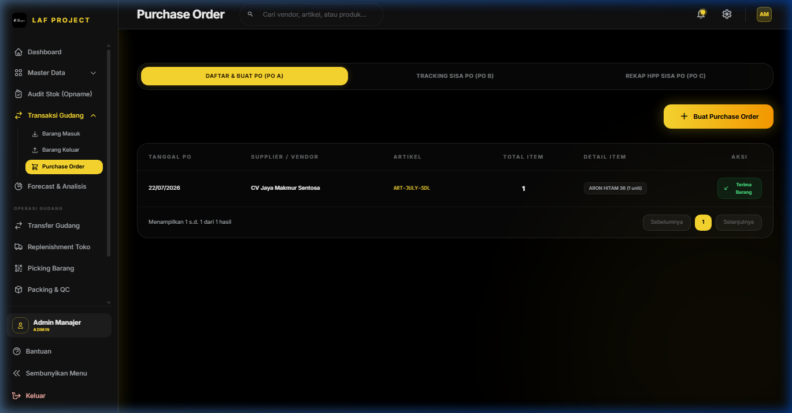
Halaman Pengelolaan Purchase Order ke Supplier
view po): Semua User terautentikasi.manage po): Super Admin, Admin Manajer, Tim Sales./purchase-order``
1. DRAFT / ORDERED: PO baru dibuat dan dikirim ke Supplier.
2. PARTIAL: Barang dari supplier diterima sebagian di gudang melalui menu Barang Masuk.
3. RECEIVED / CLOSED: Seluruh kuantitas barang dalam PO telah diterima 100% di gudang (sisa = 0).
5. Penjelasan Field Utama PO
Nama Field Tipe Input Keterangan nomor_po System Auto Nomor PO unik (contoh: PO/20260818/001) supplier_id Select Supplier tujuan pemesanan tanggal_po Date Tanggal penerbitan pesanan target_tanggal Date Target estimasi barang tiba di gudang qty_pesan Number Kuantitas total dipesan ke supplier qty_diterima Auto Kuantitas yang sudah sampai di gudang sisa Auto Sisa kuantitas PO yang belum dikirim (qty_pesan - qty_diterima)
BAB 5: FORECAST & ANALISIS INVENTORI
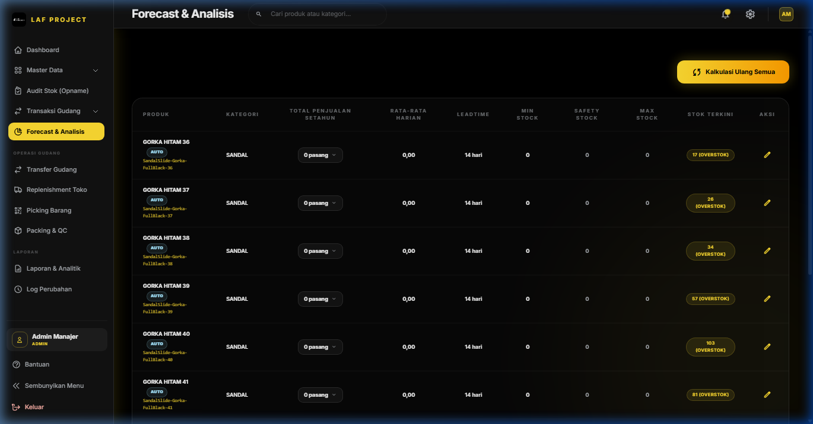
Halaman Dashboard Forecast, Analisis ABC, ROP, dan Perhitungan Safety Stock
Forecast & Analisis Inventori (ABC Analysis, ROP, & Demand Forecasting)
1. Deskripsi Singkat
Modul Forecast & Analisis adalah kecerdasan buatan dan engine analitik internal WMS LAF Project yang menghitung Klasifikasi ABC (Prinsip Pareto 80/20), Peramalan Permintaan (Demand Forecasting), Safety Stock, Minimal Stock, Maximum Stock, serta Reorder Point (ROP) secara otomatis berdasarkan data historis penjualan atau input manual pengguna.
2. Role / Hak Akses
- Melihat & Edit Analisis (
view analytics): Super Admin, Admin Manajer, Tim Finance.
3. Lokasi Menu (Path / URL)
- Path Navigasi: Sidebar -> Forecast & Analisis
- URL:
/analytics
4. Alur Penggunaan (Step by Step)
1. Buka menu Forecast & Analisis.
2. Lihat Hasil Klasifikasi ABC & Matriks Stok:
- Kelas A (High-Value / Fast-Moving): 20% SKU teratas yang menyumbang ~80% dari total nilai penjualan.
- Kelas B (Moderate-Value): 30% SKU berikutnya yang menyumbang ~15% penjualan.
- Kelas C (Low-Value / Slow-Moving): 50% SKU terbawah yang hanya menyumbang ~5% penjualan.
3. Regenerasi Perhitungan Otomatis:
- Klik tombol Hitung Ulang Analisis (Recalculate All) untuk menjalankan kalkulasi statistik ulang terhadap seluruh produk berdasarkan transaksi penjualan terbaru dari database.
4. Mengubah Parameter per Produk:
- Klik ikon Edit (Pensil) pada baris SKU yang diinginkan.
- Sesuaikan Leadtime Produksi / Pengiriman (hari) (default: 14 hari).
- Tentukan apakah akan menggunakan Hitung Otomatis dari tren bulanan atau mengaktifkan Override Stok Manual (
is_manual_stock).
Klik Tarik Data Aktual jika ingin mengambil angka riwayat transaksi dari database secara instan.
Klik Simpan Analisis.
5. Formulasi Matematika & Aturan Kalkulasi
Variabel Analisis Formulasi Matematika Keterangan Bisnis Rata-Rata Penjualan Harian $D_{daily} = \frac{\sum_{m=1}^{12} \text{penjualan}_m}{365}$ Rerata unit terjual per hari dalam 1 tahun Standar Deviasi Harian $\sigma_{daily} = \sqrt{\frac{\sum (\text{penjualan}_m - \text{mean})^2}{12}} \div \sqrt{30}$ Variabilitas / fluktuasi permintaan Safety Stock (Stok Pengaman) $SS = Z \times \sigma_{daily} \times \sqrt{L}$ Stok cadangan mengantisipasi lonjakan ($Z=1.65$ untuk Service Level 95%, $L = \text{Leadtime}$) Reorder Point (ROP) $ROP = (D_{daily} \times L) + SS$ Batas kuantitas saat PO harus diterbitkan Minimal Stock $Min = ROP$ Batas ambang bawah persediaan aman Maximum Stock $Max = ROP + (D_{daily} \times 30)$ Batas ambang atas pencegahan overstock
6. Penjelasan Field Modal Edit Analisis
Nama Field Tipe Input Wajib / Opsional Keterangan & Validasi leadtime_produksi Number Wajib Waktu tunggu dari PO diterbitkan hingga barang masuk gudang (1 - 365 hari) is_manual_stock Toggle Wajib Aktifkan jika ingin menentukan batas Min/Safety/Max stock secara manual minimal_stock Number Wajib (jika manual) Batas stok minimum manual ($\ge 0$) safety_stock Number Wajib (jika manual) Stok pengaman manual ($\ge 0$) maximum_stock Number Wajib (jika manual) Batas stok maksimal manual ($\ge 0$) sales.jan s/d des Number Wajib Histori volume penjualan dari Januari hingga Desember ($\ge 0$)
7. Tombol & Aksi
Nama Tombol Aksi & Efek ke Sistem Hitung Ulang Analisis (Recalculate All) Menjalankan AnalyticsService::recalculateAllProductAnalytics() untuk memperbarui seluruh parameter ABC, ROP, Min, Max, dan Safety Stock seluruh SKU. Tarik Data Aktual (Sync from Database) Menghitung dan mengisi angka penjualan bulanan dari tabel trx_barang_keluar_detail aktual. Simpan Analisis Memperbarui parameter analitik SKU di tabel analytics_produk.
8. Keterkaitan dengan Fitur Lain
- Dashboard Utama: Menyuplai data indikator Low Stock Alert, Dead Stock, Peak Months, dan rekomendasi kuantitas Reorder.
- Purchase Order (PO): Rekomendasi kuantitas pesan otomatis merujuk pada
maximum_stock - total_stok.
Replenishment Toko: Menggunakan minimal_stock sebagai dasar pemicu pengisian kembali barang dari Gudang ke Toko.
BAB 6: OPERASI GUDANG
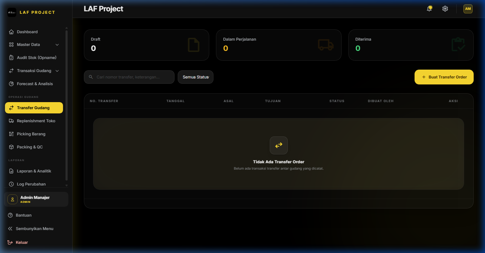
Halaman Transfer Gudang Internal dan Mutasi antar Rak/Lokasi
6.1 Transfer Gudang (Internal Warehouse Transfer)
1. Deskripsi Singkat
Modul Transfer Gudang mengelola perpindahan fisik stok barang antar-lokasi internal (misalnya dari Gudang Utama GDG-A01 ke Gudang Transit GDG-B01 atau ke Toko TKO-R01). Modul ini menjamin transparansi posisi stok selama proses perpindahan barang berlangsung (In-Transit Tracking).
2. Role / Hak Akses
- Akses Transfer Gudang (
input masuk): Super Admin, Admin Manajer, Operator Gudang.
3. Lokasi Menu (Path / URL)
- Path Navigasi: Sidebar -> Operasi Gudang -> Transfer Gudang
- URL:
/transfer (Buat Baru: /transfer/create, Detail: /transfer/{transfer}/detail)
4. Alur & Siklus Status Transfer Gudang
`
[ DRAFT ] ➔ [ PICKING ] ➔ [ IN_TRANSIT ] ➔ [ COMPLETED ]
`
1. DRAFT: Dokumen perintah transfer dibuat oleh Admin/Operator.
2. PICKING: Petugas gudang mengambil barang dari lokasi asal (terhubung ke modul Picking List).
3. IN_TRANSIT: Barang telah keluar dari lokasi asal dan dalam perjalanan menuju lokasi tujuan (stok dikurangi dari lokasi asal).
4. COMPLETED: Barang telah sampai dan diterima secara fisik di lokasi tujuan (stok ditambahkan ke lokasi tujuan).
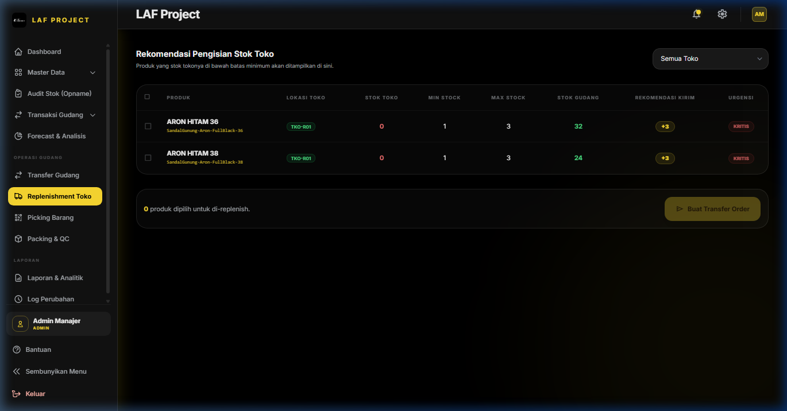
Halaman Rekomendasi Replenishment Pengisian Stok Toko Ritel
6.2 Replenishment Toko (Store Stock Replenishment)
1. Deskripsi Singkat
Replenishment Toko adalah sistem pengisian kembali persediaan toko ritel otomatis. Engine rekomendasi mendeteksi produk di toko yang jumlah stoknya telah berada di bawah Minimal Stock dan memicu pengiriman stok dari gudang utama ke lokasi toko.
2. Role / Hak Akses
- Akses Replenishment (
input masuk): Super Admin, Admin Manajer, Operator Gudang.
3. Lokasi Menu (Path / URL)
- Path Navigasi: Sidebar -> Operasi Gudang -> Replenishment Toko
- URL:
/replenishment
4. Alur Penggunaan
1. Buka menu Replenishment Toko.
2. Sistem secara otomatis menampilkan daftar SKU di Toko yang membutuhkan pengisian persediaan beserta Rekomendasi Qty Kirim.
3. Centang item produk yang ingin diisi kembali -> Klik Buat Dokumen Transfer Replenishment.
4. Dokumen Transfer Gudang diterbitkan secara otomatis dari GDG-A01 menuju TKO-R01.
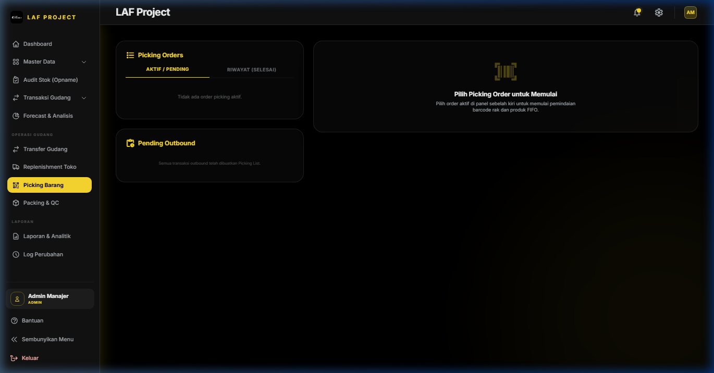
Halaman Pengambilan Barang (Picking) dengan Barcode Scanner
6.3 Picking Barang (Order Picking & Barcode Verification)
1. Deskripsi Singkat
Modul Picking Barang memandu petugas gudang dalam proses pengambilan barang dari lokasi rak (Bin/Shelf Location) untuk memenuhi pesanan Barang Keluar atau Transfer Gudang. Modul ini dilengkapi verifikasi barcode scanner untuk mencegah salah ambil barang (Zero Picking Error).
2. Role / Hak Akses
- Akses Picking (
input keluar / input masuk): Super Admin, Admin Manajer, Operator Gudang, Tim Sales.
3. Lokasi Menu (Path / URL)
- Path Navigasi: Sidebar -> Operasi Gudang -> Picking Barang
- URL:
/picking
4. Alur Penggunaan (Step by Step)
1. Buka halaman Picking Barang.
2. Pilih antrean pesanan pada tab Pending Outbound -> Klik Mulai Picking.
3. Petugas gudang menuju lokasi rak yang tertera pada lembar instruksi picking.
4. Verifikasi Barcode:
- Pindai barcode rak lokasi (misal:
GDG-A01).
Pindai barcode SKU barang (misal: LAF-SHOE-BLK-42).
Masukkan kuantitas yang diambil -> Klik Verifikasi Item.
5. Setelah seluruh item dalam daftar terambil 100%, klik Selesaikan Picking. Status pesanan berubah menjadi PICKED dan siap untuk diproses ke modul Packing & QC.
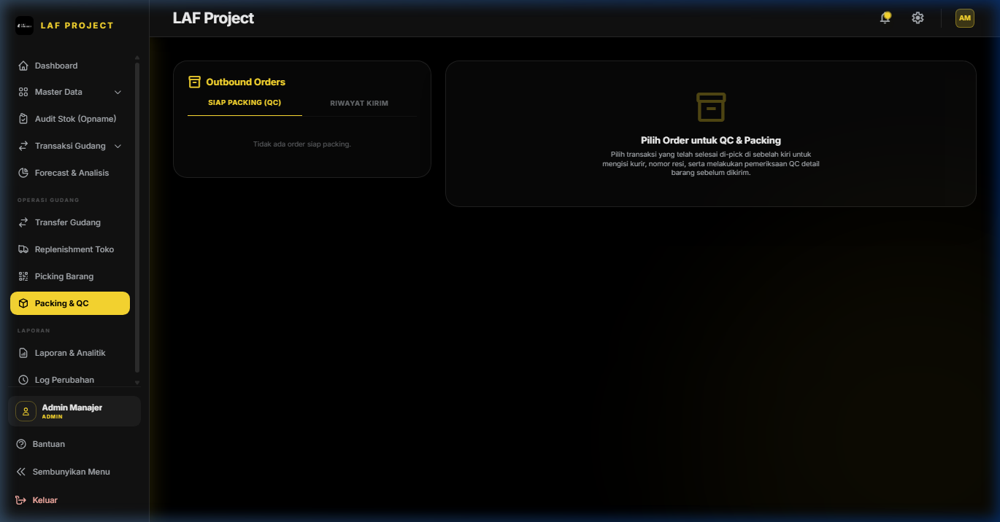
Halaman Packing, Verifikasi Quality Control, dan Cetak Shipping Label
6.4 Packing & QC (Packaging & Quality Control)
1. Deskripsi Singkat
Modul Packing & QC adalah tahap verifikasi akhir sebelum barang dikemas dalam koli/kardus dan diserahkan ke jasa kurir/pengirim. Petugas melakukan inspeksi fisik barang, pengemasan, dan pencetakan Label Pengiriman / Resi (Shipping Label).
2. Role / Hak Akses
- Akses Packing & QC (
input keluar): Super Admin, Admin Manajer, Operator Gudang, Tim Sales.
3. Lokasi Menu (Path / URL)
- Path Navigasi: Sidebar -> Operasi Gudang -> Packing & QC
- URL:
/packing
4. Alur Penggunaan
1. Buka menu Packing & QC.
2. Pilih pesanan berstatus PICKED -> Klik Mulai Packing & QC.
3. Pindai ulang barcode produk untuk memastikan barang tidak cacat dan sesuai dengan pesanan.
4. Masukkan dimensi berat/koli kardus -> Klik Selesai Packing & Cetak Label Pengiriman.
5. Tempelkan label pengiriman pada kardus kemasan.
BAB 7: LAPORAN & AUDIT LOG
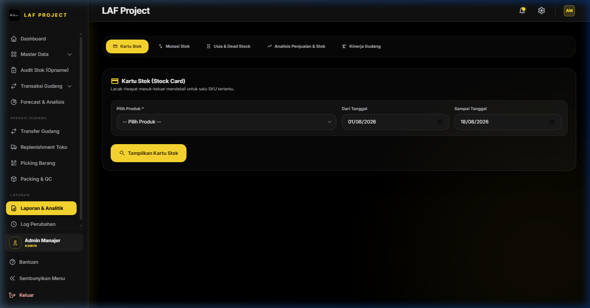
Halaman Laporan Eksekutif, Mutasi Stok, dan Cetak PDF/Excel
7.1 Laporan & Analitik (Reports & Financial Statements)
1. Deskripsi Singkat
Modul Laporan & Analitik menyajikan rangkuman data eksekutif mencakup Laporan Nilai Aset Inventori, Laporan Mutasi Stok Masuk & Keluar, Analisis Profitabilitas/Margin HPP vs Harga Jual, serta Laporan Transaksi Per Periode Tanggal.
2. Role / Hak Akses
- Akses Laporan (
view financial): Super Admin, Admin Manajer, Tim Finance.
3. Lokasi Menu (Path / URL)
- Path Navigasi: Sidebar -> Laporan -> Laporan & Analitik
- URL:
/reports (Format Cetak PDF: /reports/print)
4. Jenis-Jenis Laporan yang Tersedia
1. Laporan Nilai Persediaan (Inventory Valuation Report): Rincian total nilai aset produk berbasis HPP per lokasi gudang.
2. Laporan Mutasi Stok (Stock Movement Summary): Rekapitulasi volume stok awal, stok masuk, stok keluar, dan stok akhir.
3. Laporan Penjualan & Margin Keuntungan: Analisis omzet penjualan, modal HPP, dan gross profit per varian barang.
4. Laporan Transaksi Barang Masuk & Keluar Per Periode: Rekap harian/bulanan dengan filter rentang tanggal.
5. Fitur Ekspor & Cetak
- Ekspor Excel (.xlsx): Mengunduh dataset laporan dalam bentuk spreadsheet untuk diolah lebih lanjut.
- Cetak Dokumen PDF: Membuka tampilan mode cetak ramah printer (Print Friendly) lengkap dengan Kop Surat Perusahaan LAF Project dan kolom tanda tangan pengesahan.
[SCREENSHOT: audit-log-index - Halaman Audit Log Sistem Penelusuran Jejak Aktivitas User]
7.2 Log Perubahan (System Audit Log)
1. Deskripsi Singkat
Modul Log Perubahan adalah sistem pencatat jejak audit (Audit Trail) independen yang merekam seluruh perubahan data sensitif, aktivitas pembuat data, penyuntingan, penghapusan, IP Address, dan perubahan nilai kolom (Old Values vs New Values) di dalam database WMS.
2. Role / Hak Akses
- Akses Log Perubahan (
manage system / manage master): Super Admin, Admin Manajer.
3. Lokasi Menu (Path / URL)
- Path Navigasi: Sidebar -> Laporan -> Log Perubahan
- URL:
/audit-log
4. Penjelasan Kolom Audit Log
Nama Kolom Keterangan Data Tanggal & Waktu Timestamp kejadian presisi hingga detik (created_at) Pengguna (Username) Nama user / operator yang melakukan aksi Aksi (Action) Jenis tindakan: CREATE (Tambah), UPDATE (Ubah), DELETE (Hapus), POST (Pengesahan) Model / Objek Nama entitas tabel yang dimodifikasi (misal: App\Models\Produk, OpnameHeader) ID Objek Primary key record yang diubah Perubahan Data Perbandingan JSON data sebelum diubah (Before) vs sesudah diubah (After) IP Address Alamat IP jaringan perangkat pengguna
5. Keamanan & Imutabilitas Log
- Log Audit bersifat Read-Only dan Imutabel (tidak dapat diedit atau dihapus oleh siapapun, termasuk Super Admin) untuk menjamin standar kepatuhan audit keamanan informasi IT.
BAB 8: MANAJEMEN AKSES & KEAMANAN SISTEM
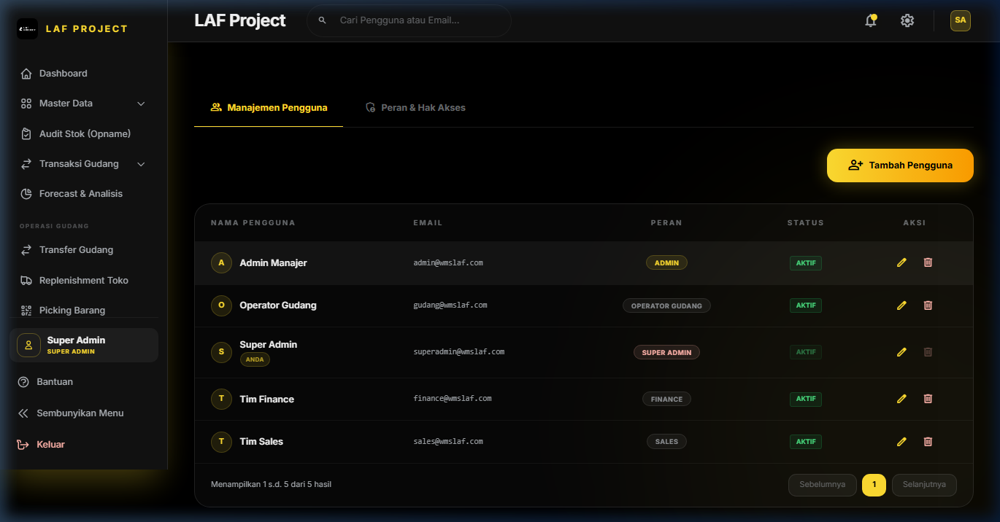
Halaman Pengelolaan Pengguna, Peran, dan Hak Akses Role RBAC
Manajemen Akses & Keamanan Pengguna (User & Role Access Control)
1. Deskripsi Singkat
Modul Manajemen Akses mengatur otentikasi akun pengguna (User Management), kredensial login, status aktif/non-aktif akun, serta alokasi peran (Roles & Permissions) menggunakan standar Spatie Permission RBAC (Role-Based Access Control) di WMS LAF Project.
2. Role / Hak Akses
- Akses Sistem Administrator (
manage system): Super Admin saja.
3. Lokasi Menu (Path / URL)
- Path Navigasi: Sidebar -> Manajemen Akses
- URL:
/user-management
4. Alur Penggunaan (Step by Step)
#### A. Menambah Pengguna Baru
1. Buka menu Manajemen Akses -> Klik tombol + Tambah Pengguna Baru.
2. Isi Nama Lengkap, Alamat Email (Unik), dan Password (min 8 karakter + konfirmasi).
3. Pilih Peran / Role:
super_admin: Memiliki seluruh akses termasuk manajemen sistem pengguna.
admin: Memiliki seluruh akses operasional gudang, master, dan laporan keuangan (kecuali user management).
operator_gudang: Akses khusus transaksi barang masuk, barang keluar, transfer, opname, picking, dan packing.
sales: Akses khusus pencatatan barang keluar, buat PO, dan pratinjau katalog stok.
finance: Akses khusus laporan analitik, nilai inventori, dan transaksi PO/Stok.
4. Tentukan Status Akun (Aktif / Non-Aktif).
5. Klik Simpan Pengguna.
#### B. Mengedit Data / Reset Password Pengguna
1. Klik tombol Edit pada baris pengguna yang ingin diubah.
2. Ubah data nama, email, role, atau centang ubah password jika pengguna lupa kata sandi.
3. Klik Perbarui Pengguna.
#### C. Menonaktifkan Akun Pengguna
1. Klik tombol Nonaktifkan Akun (atau ubah status is_active menjadi false).
2. Pengguna yang dinonaktifkan tidak akan bisa login ke dalam sistem WMS LAF Project meskipun password benar.
5. Penjelasan Field User Management
Nama Field Tipe Input Wajib / Opsional Keterangan & Validasi name Text Wajib Nama pengguna lengkap (maks 255 karakter) email Email Wajib Alamat email unik login pengguna (Unique in users) password Password Wajib Kata sandi minimal 8 karakter (Wajib saat buat baru, opsional saat edit) password_confirmation Password Wajib* Konfirmasi ulang kata sandi (Harus identik dengan password) roleName Select Wajib Pilihan Role Spatie (super_admin, admin, operator_gudang, sales, finance) is_active Toggle / Select Wajib Status akun pengguna (Aktif / Non-Aktif)
6. Tombol & Aksi
Nama Tombol Aksi & Efek ke Sistem + Tambah Pengguna Baru Membuka modal form pendaftaran akun user WMS baru. Edit Pengguna Membuka modal penyuntingan nama, role, email, dan reset password. Nonaktifkan / Aktifkan Mengubah status keaktifan is_active pengguna secara instan. Hapus User Memindahkan/menghapus akun user (Super Admin terlindungi dari penghapusan mandiri).
7. Validasi & Aturan Bisnis (Controller
UserManagement\Index.php)
- Proteksi Super Admin Mandiri: Pengguna
super_admin TIDAK BISA MENGHAPUS ATAU MENONAKTIFKAN AKUNNYA SENDIRI saat sedang dalam posisi login untuk mencegah terkuncinya sistem (System Lockout Protection).
Enkripsi Kredensial: Password disimpan di database menggunakan enkripsi hashing aman Bcrypt (Hash::make()`).